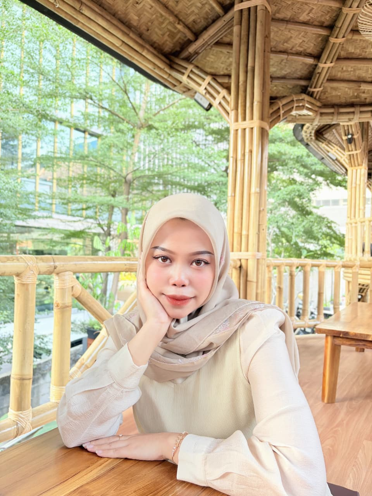

01
MRT Jakarta Documentation
Business analysis · Technical documentation
Prepared business requirements, functional specifications, SOPs, user guides, design mockups, and stakeholder reporting to support project implementation.
↗
System & Business Analyst with a foundation in Informatics Engineering. I turn stakeholder needs into clear requirements, structured documentation, and thoughtful digital solutions.
A bridge between people, processes, and technology.

I enjoy making complex information easier to understand — and turning ideas into systems people can actually use.
My experience spans business requirements, functional specifications, technical documentation, stakeholder coordination, web systems, and operational reporting. I bring an analytical mindset together with a practical understanding of how digital products are planned, documented, and supported.
With a background in both system analysis and frontend development, I value clear communication, thoughtful structure, and consistency from the first conversation to implementation.
A selection of projects and contributions across analysis, documentation, and digital systems.
My experience sits at the intersection of analysis, operations, documentation, and digital product development.
A practical toolkit for understanding needs, shaping solutions, and keeping work organized.
Structuring business needs into clear requirements and functional direction for digital systems.
Making information accessible, consistent, and useful for project teams and stakeholders.
Exploring user needs and translating ideas into structured interfaces and reusable components.
Supporting coordination, monitoring, reporting, and the operational flow of digital projects.
Bachelor of Informatics Engineering (B.I.E.)
GPA 3.82 / 4.00 · Area of study: IT Project Implementation and Management
Published a Sinta 4-indexed journal article on optimizing consistency and efficiency of SIMAKIP’s frontend.
TOEFL ITP — TOEFL Academy
BNSP — Computer Operator
Certiport — Microsoft Office Specialist Excel 2016
PT MRT Jakarta · Selected among the top 6 interns out of more than 58 MagangHub participants across company divisions.
BPTI UHAMKA · Selected as a technical mentor for more than five internship participants.